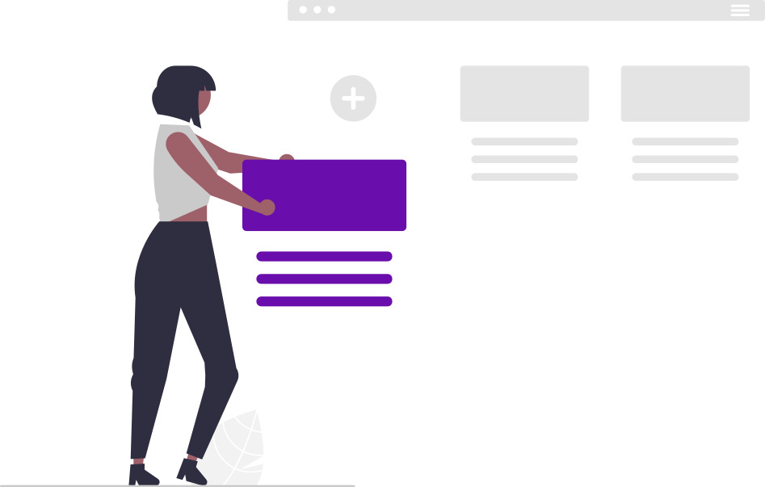

Esplora nuovi blog e segui quelli che ti interessano di più. Ne cerchi uno specifico?
I blog di cui sei proprietario e i blog che gestisci come coautore. Creane uno nuovo.
I blog che segui appariranno qui e troverai i loro post nella Home. Seguine altri.